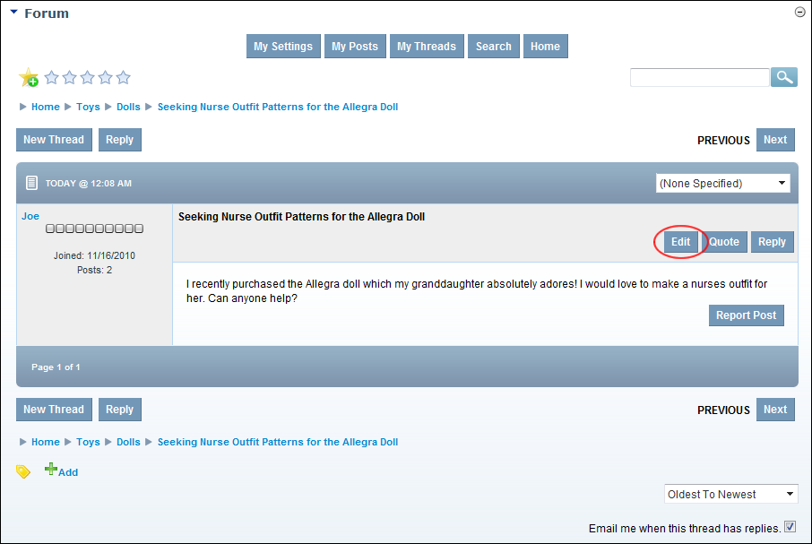

Editing your Forum Posts
How a forum member can edit their own posts on the Forum module. Note: Post editing may be restricted to a number of minutes following the original posting.
- View your threads. See "Viewing your Threads"
- Locate the required post and then open it by clicking on the [post title] link.
- Click the Edit link located to the right of the post title. This opens the Add/Edit Post page.
- Edit the subject or body or attach files as required. See "Adding a Forum Post (Advanced)"
- Click the Submit link. The post is immediately added to the forum and displayed to you.

Editing Your Post
-
See "Editing Global User Settings"